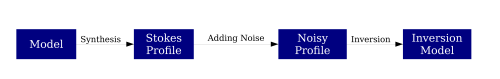

{kind=link}
SIR-MIG Documentation#
Welcome to SIR MIG’s documentation!
Indices and tables#
Description#
SIR-MIG is an algorithm based on the inversion code SIR. It parallelises SIR and implements functionalities to use multiple random guesses. There are three different modes selectable:
1C : 1 Component Inversion
2C : 2 Component Inversion
MC : Monte-Carlo Simulation
SY : Synthesis
It is also possible to use it without random guesses.
Configuration#
The code is always executed with a configuration file which is different for each mode. The options can be read here here
Monte-Carlo Simulation#
The simulation is constructed the following way:
{kind=link}
- This can be done for as many numbers as needed. The code will do the following
Create Models as described in the section //Constructing Models//.
Synthesise the models to produce Stokes Profiles.
Add Noise to the profiles.
Invert the noisy profiles to get an Inversion Model.
Constructing Models#
Information about how the models are constructed can be found here:
Creating Temperature Atmospheres: Temperature
Randomise Parameters: Randomising Parameters
Adding Noise#
Noise is added by assuming a normal distribution with a given width \(\sigma\) for each Stokes Parameter.
Inversion#
Note
This project is under active development.